Sử dụng AnimationTree
Giới thiệu
Với AnimationPlayer, Godot có một trong những hệ thống hoạt ảnh linh hoạt nhất mà bạn có thể tìm thấy ở bất kỳ game engine nào. Nó gần như độc nhất ở khả năng tạo hoạt ảnh cho hầu hết mọi thuộc tính của mọi node hay resource, cùng với các track chuyên dụng cho transform, bezier, gọi hàm, âm thanh và hoạt ảnh con.
Tuy nhiên, khả năng hỗ trợ trộn các hoạt ảnh đó qua AnimationPlayer còn hạn chế, vì bạn chỉ có thể đặt một thời gian chuyển tiếp cross-fade cố định.
AnimationTree là một node được thiết kế để xử lý các chuyển tiếp nâng cao.
AnimationTree và AnimationPlayer
Trước khi bắt đầu, hãy biết rằng node AnimationTree không chứa hoạt ảnh của riêng nó. Thay vào đó, nó dùng các hoạt ảnh nằm trong một node AnimationPlayer. Bạn tạo, chỉnh sửa hoặc import hoạt ảnh trong AnimationPlayer rồi dùng AnimationTree để điều khiển việc phát.
AnimationPlayer và AnimationTree có thể được dùng trong cả scene 2D lẫn 3D. Khi import scene 3D và hoạt ảnh của chúng, bạn có thể dùng hậu tố tên để đơn giản hóa quy trình và import với các thuộc tính chính xác. Cuối cùng, scene Godot được import sẽ chứa các hoạt ảnh trong một node AnimationPlayer. Vì bạn hiếm khi dùng trực tiếp các scene được import trong Godot (chúng thường được tạo instance hoặc được kế thừa), bạn có thể đặt node AnimationTree vào scene mới chứa scene được import. Sau đó, trỏ node AnimationTree đến AnimationPlayer đã được tạo trong scene được import.
Để tham khảo, đây là cách làm trong demo Third Person Shooter:
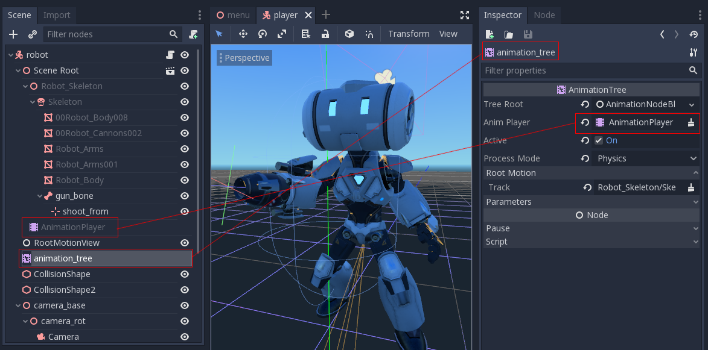
Một scene mới được tạo cho người chơi với CharacterBody3D làm gốc. Bên trong scene này, tệp .dae (Collada) gốc được tạo instance và một node AnimationTree được tạo.
Tạo cây
Để dùng AnimationTree, bạn phải đặt một root node. Animation root node là một lớp chứa và đánh giá các node con, rồi xuất ra một hoạt ảnh. Có 3 loại node con:
Animation node, tham chiếu đến một hoạt ảnh từ
AnimationPlayerđược liên kết.Animation Root node, dùng để trộn các node con và có thể lồng vào nhau.
Animation Blend node, dùng trong
AnimationNodeBlendTree, một đồ thị node 2D. Blend node nhận nhiều cổng đầu vào và cho ra một cổng đầu ra.
Có sẵn một vài loại root node:

AnimationNodeAnimation: Chọn một hoạt ảnh từ danh sách và phát nó. Đây là root node đơn giản nhất và thường không được dùng làm gốc.AnimationNodeBlendTree: Chứa nhiều node con trong một đồ thị. Có nhiều blend node sẵn có, chẳng hạn mix, blend2, blend3, one shot, v.v.AnimationNodeBlendSpace1D: Cho phép trộn tuyến tính giữa hai animation node. Điều khiển vị trí blend trong một blend space 1D để trộn giữa các hoạt ảnh.AnimationNodeBlendSpace2D: Cho phép trộn tuyến tính giữa ba animation node. Điều khiển vị trí blend trong một blend space 2D để trộn giữa các hoạt ảnh.AnimationNodeStateMachine: Chứa nhiều node con trong một đồ thị. Mỗi node được dùng như một trạng thái, với nhiều hàm dùng để chuyển đổi giữa các trạng thái.
Blend tree
Khi tạo một AnimationNodeBlendTree, bạn sẽ có một đồ thị 2D trống ở bảng dưới cùng, trong tab AnimationTree. Theo mặc định, nó chỉ chứa một node Output.

Để hoạt ảnh phát được, phải có một node được kết nối với đầu ra. Bạn có thể thêm node từ menu Add Node.. hoặc bằng cách nhấp chuột phải vào một vùng trống:

Kết nối đơn giản nhất là nối trực tiếp một node Animation vào đầu ra, khi đó nó chỉ đơn thuần phát hoạt ảnh.

Dưới đây là mô tả các node khác có sẵn:
Blend2 / Blend3
Các node này sẽ trộn giữa hai hoặc ba đầu vào theo một giá trị blend do người dùng chỉ định:
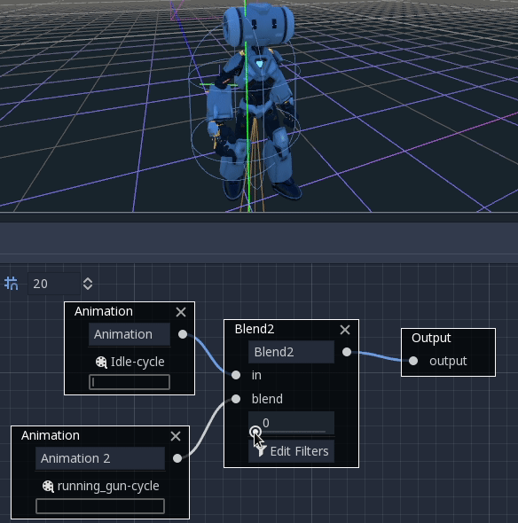
Việc trộn có thể dùng bộ lọc để kiểm soát riêng từng track xem track nào được trộn và track nào không. Điều này hữu ích để xếp chồng các hoạt ảnh lên nhau.
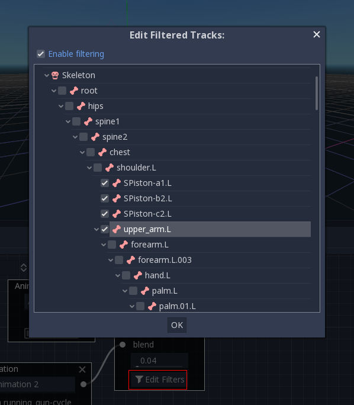
Để trộn phức tạp hơn, nên dùng blend space thay thế.
OneShot
Node này sẽ thực thi một hoạt ảnh một lần và trả về khi kết thúc. Bạn có thể tùy chỉnh thời gian blend cho fade in và fade out, cũng như các bộ lọc.

# Play child animation connected to "shot" port.
animation_tree.set("parameters/OneShot/request", AnimationNodeOneShot.ONE_SHOT_REQUEST_FIRE)
# Alternative syntax (same result).
animation_tree["parameters/OneShot/request"] = AnimationNodeOneShot.ONE_SHOT_REQUEST_FIRE
# Abort child animation connected to "shot" port.
animation_tree.set("parameters/OneShot/request", AnimationNodeOneShot.ONE_SHOT_REQUEST_ABORT)
# Alternative syntax (same result).
animation_tree["parameters/OneShot/request"] = AnimationNodeOneShot.ONE_SHOT_REQUEST_ABORT
# Get current state (read-only).
animation_tree.get("parameters/OneShot/active"))
# Alternative syntax (same result).
animation_tree["parameters/OneShot/active"]
// Play child animation connected to "shot" port.
animationTree.Set("parameters/OneShot/request", (int)AnimationNodeOneShot.OneShotRequest.Fire);
// Abort child animation connected to "shot" port.
animationTree.Set("parameters/OneShot/request", (int)AnimationNodeOneShot.OneShotRequest.Abort);
// Get current state (read-only).
animationTree.Get("parameters/OneShot/active");
TimeSeek
Node này cho phép bạn tua (seek) đến một thời điểm trong hoạt ảnh được kết nối với đầu vào in của nó. Dùng node này để phát một Animation bắt đầu từ một vị trí phát nhất định. Lưu ý rằng giá trị yêu cầu tua được tính bằng giây, nên nếu muốn phát hoạt ảnh từ đầu, hãy đặt giá trị thành 0.0, hoặc nếu muốn phát hoạt ảnh từ giây thứ 3, hãy đặt giá trị thành 3.0.
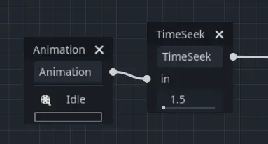
# Play child animation from the start.
animation_tree.set("parameters/TimeSeek/seek_request", 0.0)
# Alternative syntax (same result).
animation_tree["parameters/TimeSeek/seek_request"] = 0.0
# Play child animation from 12 second timestamp.
animation_tree.set("parameters/TimeSeek/seek_request", 12.0)
# Alternative syntax (same result).
animation_tree["parameters/TimeSeek/seek_request"] = 12.0
// Play child animation from the start.
animationTree.Set("parameters/TimeSeek/seek_request", 0.0);
// Play child animation from 12 second timestamp.
animationTree.Set("parameters/TimeSeek/seek_request", 12.0);
TimeScale
Node này cho phép bạn điều chỉnh tốc độ của hoạt ảnh được kết nối với đầu vào in của nó. Tốc độ hoạt ảnh sẽ được nhân với số trong tham số scale. Đặt scale thành 0 sẽ tạm dừng hoạt ảnh. Đặt scale thành số âm sẽ phát hoạt ảnh ngược lại.

Transition
Node này là phiên bản đơn giản hóa của StateMachine. Bạn kết nối các hoạt ảnh vào các đầu vào, và chỉ số trạng thái hiện tại sẽ quyết định hoạt ảnh nào được phát. Bạn có thể chỉ định thời gian chuyển tiếp crossfade. Trong Inspector, bạn có thể thay đổi số cổng đầu vào, sắp xếp lại hoặc xóa các đầu vào.
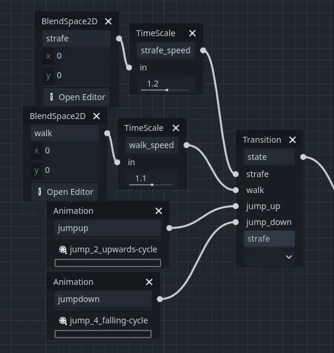
# Play child animation connected to "state_2" port.
animation_tree.set("parameters/Transition/transition_request", "state_2")
# Alternative syntax (same result).
animation_tree["parameters/Transition/transition_request"] = "state_2"
# Get current state name (read-only).
animation_tree.get("parameters/Transition/current_state")
# Alternative syntax (same result).
animation_tree["parameters/Transition/current_state"]
# Get current state index (read-only).
animation_tree.get("parameters/Transition/current_index"))
# Alternative syntax (same result).
animation_tree["parameters/Transition/current_index"]
// Play child animation connected to "state_2" port.
animationTree.Set("parameters/Transition/transition_request", "state_2");
// Get current state name (read-only).
animationTree.Get("parameters/Transition/current_state");
// Get current state index (read-only).
animationTree.Get("parameters/Transition/current_index");
StateMachine
Khi tạo một AnimationNodeStateMachine, bạn sẽ có một đồ thị 2D trống ở bảng dưới cùng, trong tab AnimationTree. Theo mặc định, nó chứa một trạng thái Start và End.

Để thêm trạng thái, nhấp chuột phải hoặc dùng nút create new nodes, có biểu tượng dấu cộng trong ô vuông. Bạn có thể thêm hoạt ảnh, blendspace, blendtree, hoặc thậm chí một StateMachine khác. Để chỉnh sửa một trong các node con phức tạp hơn này, nhấp vào biểu tượng bút chì ở bên phải trạng thái. Để quay lại StateMachine ban đầu, nhấp Root ở góc trên bên trái của bảng.
Trước khi StateMachine có thể làm được gì hữu ích, các trạng thái phải được kết nối bằng các chuyển tiếp (transition). Để thêm chuyển tiếp, nhấp nút connect nodes, có hình một đường thẳng với mũi tên hướng sang phải, rồi kéo giữa hai trạng thái. Bạn có thể tạo 2 chuyển tiếp giữa các trạng thái, mỗi chuyển tiếp theo một hướng.

Có 3 loại chuyển tiếp:
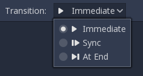
Immediate: Sẽ chuyển ngay lập tức sang trạng thái tiếp theo.
Sync: Sẽ chuyển ngay lập tức sang trạng thái tiếp theo, nhưng sẽ tua trạng thái mới đến vị trí phát của trạng thái cũ.
At End: Sẽ chờ đến khi trạng thái hiện tại phát xong, rồi chuyển sang đầu hoạt ảnh của trạng thái tiếp theo.
Chuyển tiếp cũng có một vài thuộc tính. Nhấp vào một chuyển tiếp và nó sẽ được hiển thị trong inspector:

Xfade Time là thời gian cross-fade giữa trạng thái này và trạng thái tiếp theo.
Xfade Curve là cross-fade theo một đường cong thay vì trộn tuyến tính.
Reset xác định trạng thái bạn đang chuyển sang có phát từ đầu (true) hay không (false).
Priority được dùng cùng với hàm
travel()từ code (sẽ nói thêm ở phần sau). Các chuyển tiếp có priority thấp hơn sẽ được ưu tiên khi di chuyển qua cây.Switch Mode là loại chuyển tiếp (xem ở trên). Có thể thay đổi nó tại đây sau khi tạo.
Advance Mode xác định chế độ chuyển tiếp tự động. Nếu là
Disabled, chuyển tiếp sẽ không được dùng. Nếu làEnabled, chuyển tiếp chỉ được dùng trongtravel(). Nếu làAuto, chuyển tiếp sẽ được dùng nếu điều kiện và biểu thức advance là true, hoặc nếu không có điều kiện/biểu thức advance nào.
Advance Condition và Advance Expression
2 thuộc tính cuối cùng trong một chuyển tiếp StateMachine là Advance Condition và Advance Expression. Khi Advance Mode được đặt thành Auto, chúng xác định chuyển tiếp có tiến tới hay không.
Advance Condition là một phép kiểm tra đúng/sai. Bạn có thể nhập tên một biến tùy chỉnh vào ô văn bản, và khi StateMachine đến transition này, nó sẽ kiểm tra xem biến của bạn có phải là true không. Nếu đúng, transition sẽ tiếp tục. Lưu ý rằng advance condition chỉ kiểm tra xem một biến có phải là true không, nó không thể kiểm tra giá trị sai.
Điều này khiến Advance Condition có khả năng rất hạn chế. Nếu muốn tạo một transition qua lại dựa trên một thuộc tính, bạn sẽ cần tạo 2 biến có giá trị ngược nhau và kiểm tra xem một trong hai có đúng không. Đó là lý do Advance Expression được bổ sung trong Godot 4.
Advance Expression hoạt động tương tự Advance Condition, nhưng thay vì kiểm tra một biến có đúng hay không, nó đánh giá một biểu thức bất kỳ. Biểu thức là bất cứ thứ gì bạn có thể đặt trong câu lệnh if. Dưới đây đều là ví dụ về các biểu thức dùng được trong Advance Expression:
is_walkingis_walking == true(hoạt động giống hệt biểu thức ở trên)is_walking && !is_idlevelocity > 0player.is_on_floor()
Cảnh báo
Biểu thức phân biệt chữ hoa chữ thường. Nếu tham chiếu đến thuộc tính của engine, chẳng hạn velocity trên node class_CharacterBody3D, bạn nên dùng quy ước đặt tên snake_case. Nếu tham chiếu đến thuộc tính của script, bạn nên dùng đúng kiểu đặt tên trong script, thường là snake_case trong GDScript và PascalCase trong C#.
Đây là ví dụ về một transition của StateMachine được thiết lập sai khi dùng Advance Condition:


Cách này không hoạt động vì Advance Condition có chứa biến !, thứ không thể kiểm tra được.
Đây là cùng ví dụ đó, được thiết lập đúng bằng hai biến ngược nhau:
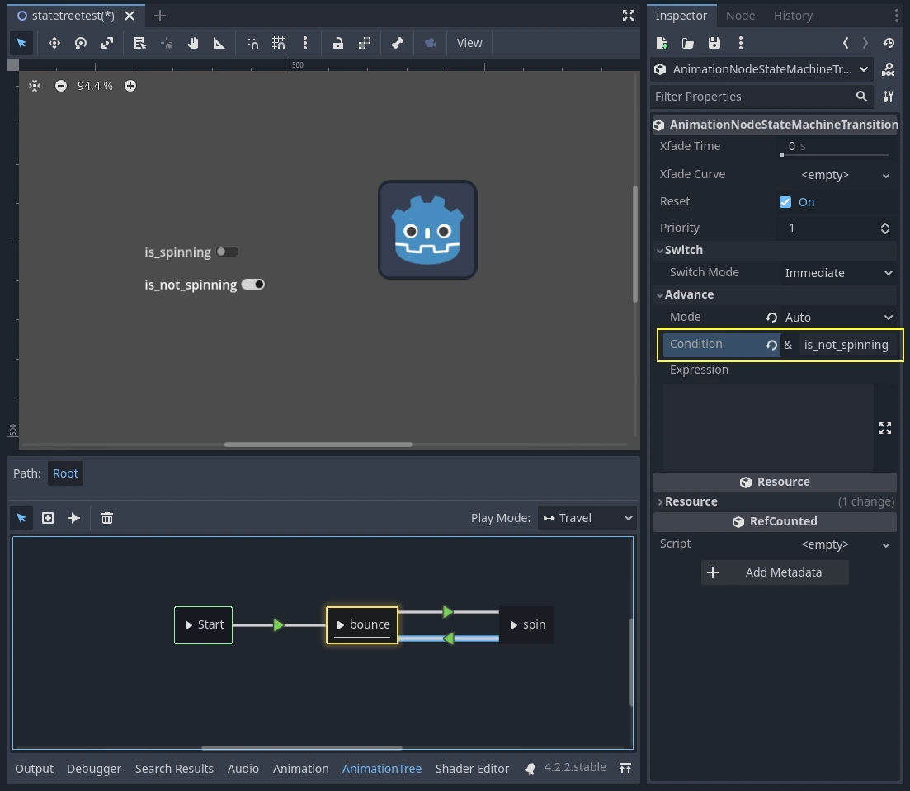

Đây là cùng ví dụ đó nhưng dùng Advance Expression thay vì Advance Condition, nhờ vậy không cần đến hai biến:
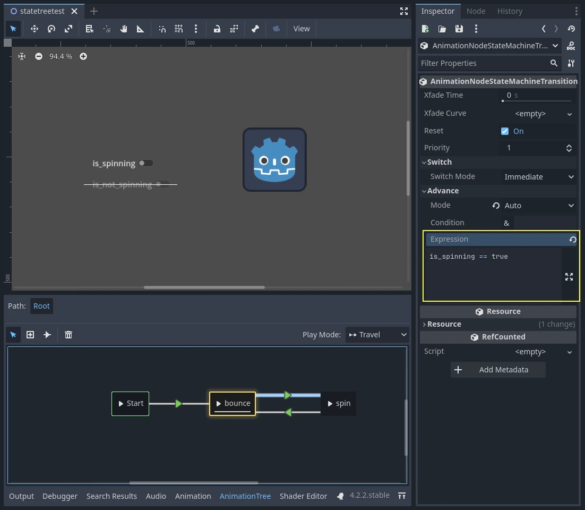


Để dùng Advance Expression, bạn phải đặt Advance Expression Base Node trong Inspector của node AnimationTree. Mặc định, nó trỏ đến chính node AnimationTree, nhưng bạn cần trỏ nó đến node nào chứa script có các biến hoạt ảnh của bạn.
Xem thêm
Advance Expression được đánh giá bằng lớp class_expression của Godot. Xem Tính giá trị biểu thức để biết thêm về cách viết biểu thức.
Di chuyển (travel) trong StateMachine
Một trong những tính năng hay trong cách triển khai StateMachine của Godot là khả năng travel. Bạn có thể yêu cầu graph đi từ trạng thái hiện tại sang một trạng thái khác, đồng thời đi qua tất cả các trạng thái trung gian. Việc này được thực hiện bằng thuật toán A*. Nếu không có đường transition nào bắt đầu từ trạng thái hiện tại và kết thúc ở trạng thái đích, graph sẽ dịch chuyển tức thời đến trạng thái đích.
Để dùng khả năng travel, trước tiên bạn cần lấy đối tượng AnimationNodeStateMachinePlayback từ node AnimationTree (nó được export dưới dạng một thuộc tính), sau đó gọi một trong nhiều hàm của nó:
var state_machine = animation_tree["parameters/playback"]
state_machine.travel("SomeState")
AnimationNodeStateMachinePlayback stateMachine = (AnimationNodeStateMachinePlayback)animationTree.Get("parameters/playback");
stateMachine.Travel("SomeState");
StateMachine phải đang chạy thì mới có thể travel. Hãy nhớ gọi start() hoặc nối một node vào Start.
BlendSpace2D và BlendSpace1D
BlendSpace2D là node dùng để pha trộn nâng cao trong hai chiều. Các điểm đại diện cho hoạt ảnh được thêm vào một không gian 2D, sau đó một vị trí nằm giữa chúng được điều khiển để xác định kết quả pha trộn:

Bạn có thể chèn các điểm này ở bất kỳ đâu trên graph bằng cách nhấp chuột phải hoặc dùng nút add point trên thanh công cụ. Khi được tạo, điểm sẽ lấy tên theo hoạt ảnh hoặc kiểu AnimationRootNode đã chọn. Sau đó bạn có thể đổi tên điểm bằng cách nhấp vào tên của nó, hoặc đổi vị trí bằng cách nhấp và kéo tên hoặc điểm. Nếu bật Auto Triangles, các tam giác pha trộn giữa các điểm đã chèn sẽ được tạo tự động bằng phép tam giác hóa Delaunay.
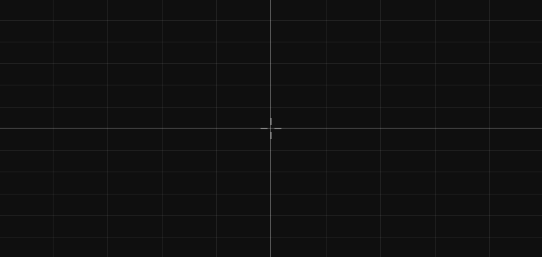
Bạn có thể điều chỉnh mục tiêu pha trộn hoạt ảnh của node này trong trình chỉnh sửa bằng cách giữ Shift trong khi kéo chuột trái, hoặc dùng công cụ chuyên dụng.
BlendSpace1D hoạt động giống hệt BlendSpace2D, nhưng chỉ trong một chiều (một đường nằm ngang). Vì không dùng tam giác nên nó có thể hoạt động với ít hơn ba điểm pha trộn.
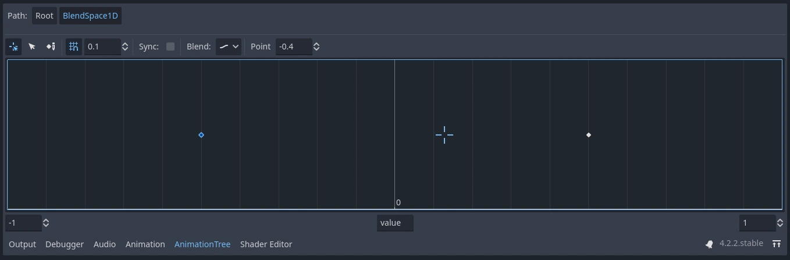
Chế độ đồng bộ
Cả BlendSpace1D và BlendSpace2D đều có thuộc tính Sync Mode điều khiển cách các hoạt ảnh tiến lên khi được pha trộn. Thuộc tính này thay thế thuộc tính boolean sync cũ và cho phép kiểm soát chính xác hơn.

Có bốn chế độ:
None (mặc định): Các hoạt ảnh không hoạt động bị đóng băng và không tiến lên. Chỉ hoạt ảnh đang hoạt động (có trọng số cao nhất) mới tiến lên.
Independent: Các hoạt ảnh không hoạt động vẫn tiến lên với trọng số
0. Hành vi này giống với cài đặtsync = truecũ.Cyclic Mutable: Tất cả hoạt ảnh được co giãn thời gian để pha của chúng luôn khớp nhau. Độ dài chu kỳ chung được tính động từ các trọng số pha trộn đang hoạt động, nghĩa là một hoạt ảnh đơn lẻ không được pha trộn sẽ phát ở tốc độ bình thường. Chế độ này hữu ích khi tất cả hoạt ảnh của bạn có cùng chu kỳ logic (ví dụ: các vòng lặp di chuyển) nhưng độ dài có thể hơi khác nhau.
Cyclic Constant: Tất cả hoạt ảnh được co giãn thời gian để hoàn thành một chu kỳ đầy đủ trong đúng Cyclic Length giây, bất kể độ dài riêng của từng hoạt ảnh. Hãy đặt thuộc tính
cyclic_lengththành thời lượng chu kỳ mong muốn (phải lớn hơn0).
Cảnh báo
Các chế độ đồng bộ theo chu kỳ yêu cầu mọi điểm pha trộn đều dùng AnimationNodeAnimation có độ dài hữu hạn và không đổi. Nếu có điểm pha trộn nào dùng kiểu node khác, một cảnh báo sẽ được hiển thị và đồng bộ theo chu kỳ sẽ không có tác dụng:
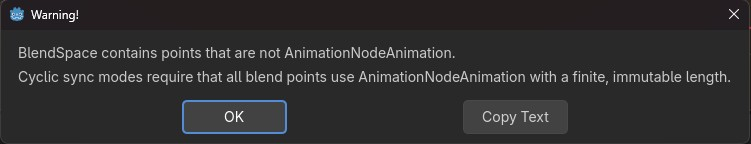
Ghi chú
Khi dùng một trong hai chế độ chu kỳ với các hoạt ảnh có độ dài khác nhau, việc áp dụng AnimationNodeTimeSeek lên đầu ra sẽ phá vỡ sự đồng bộ. Trong trường hợp đó, hãy dùng AnimationNodeAnimation.use_custom_timeline để chuẩn hóa độ dài hoạt ảnh trước khi đồng bộ.
Chế độ pha trộn
Mặc định, việc pha trộn diễn ra ở chế độ Continuous, bằng cách nội suy các điểm bên trong tam giác gần nhất trong BlendSpace2D, hoặc trên đoạn thẳng giữa các điểm trong BlendSpace1D. Tuy nhiên, đây không phải lúc nào cũng là lựa chọn tốt nhất. Ví dụ, khi làm việc với hoạt ảnh 2D dạng frame-by-frame, bạn có thể muốn chuyển sang chế độ Discrete, trong đó các trạng thái trung gian của quá trình pha trộn không xuất hiện trong kết quả. Ngoài ra, nếu muốn giữ nguyên vị trí phát hiện tại khi chuyển giữa các hoạt ảnh rời rạc, bạn có thể dùng chế độ Carry. Các chế độ này được đặt trong menu Blend.

Để pha trộn tốt hơn
Để kết quả pha trộn mang tính tất định (có thể tái tạo và luôn nhất quán), các giá trị thuộc tính được pha trộn phải có một giá trị ban đầu cụ thể. Ví dụ, khi pha trộn hai hoạt ảnh, nếu một hoạt ảnh có property track còn hoạt ảnh kia không có, hoạt ảnh pha trộn sẽ được tính như thể hoạt ảnh thứ hai có một property track mang giá trị ban đầu.
Khi dùng các track Position/Rotation/Scale 3D cho xương của Skeleton3D, giá trị ban đầu là Bone Rest. Với các thuộc tính khác, giá trị ban đầu là 0, và nếu track có mặt trong hoạt ảnh RESET thì giá trị của keyframe đầu tiên sẽ được dùng thay thế.
Ví dụ, AnimationPlayer sau đây có hai hoạt ảnh, nhưng một trong số đó thiếu Property track cho Position.

Điều này có nghĩa là hoạt ảnh thiếu track đó sẽ coi các Position đó là Vector2(0, 0).
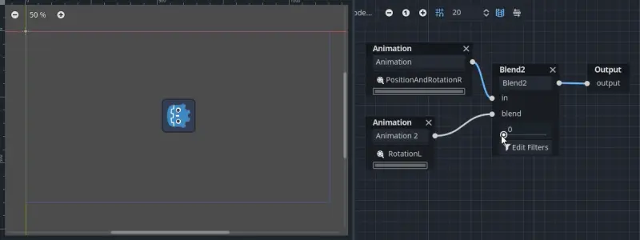
Vấn đề này có thể được giải quyết bằng cách thêm một Property track cho Position làm giá trị ban đầu vào hoạt ảnh RESET.
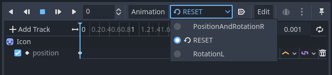
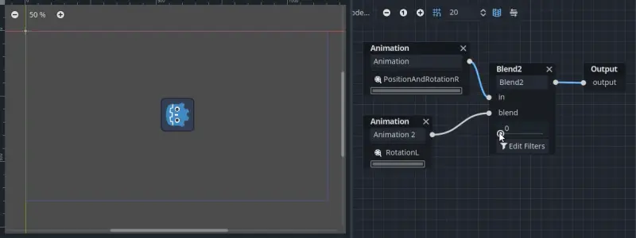
Ghi chú
Lưu ý rằng hoạt ảnh RESET tồn tại để xác định tư thế mặc định khi tải đối tượng ban đầu. Nó được giả định chỉ có một frame và không dùng để phát lại theo timeline.
Cũng cần lưu ý rằng các track Rotation 3D và các Property track cho phép xoay 2D có Interpolation Type đặt là Linear Angle hoặc Cubic Angle sẽ ngăn hoạt ảnh pha trộn xoay quá 180 độ so với giá trị ban đầu.
Điều này có thể hữu ích cho Skeleton3D để ngăn xương xuyên qua cơ thể khi pha trộn hoạt ảnh. Vì vậy, giá trị Bone Rest của Skeleton3D nên càng gần điểm giữa của phạm vi chuyển động càng tốt. Điều này có nghĩa là với các mô hình hình người, tốt nhất nên import chúng ở tư thế chữ T (T-pose).
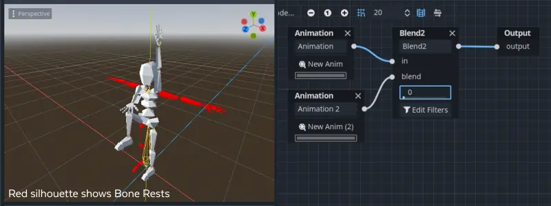
Bạn có thể thấy đường xoay ngắn nhất tính từ Bone Rest được ưu tiên hơn đường xoay ngắn nhất giữa các hoạt ảnh.
Nếu cần xoay chính Skeleton3D quá 180 độ bằng các hoạt ảnh pha trộn cho chuyển động, bạn có thể dùng Root Motion.
Root motion
Khi làm việc với hoạt ảnh 3D, một kỹ thuật phổ biến là người làm hoạt ảnh dùng xương gốc của bộ xương để tạo chuyển động cho phần còn lại của bộ xương. Cách này cho phép tạo hoạt ảnh nhân vật sao cho bước chân thực sự khớp với mặt sàn bên dưới. Nó cũng cho phép tương tác chính xác với các đối tượng trong các đoạn cắt cảnh.
Khi phát lại hoạt ảnh trong Godot, bạn có thể chọn xương này làm root motion track. Khi đó, phép biến đổi của xương sẽ bị triệt tiêu về mặt hình ảnh (hoạt ảnh sẽ đứng yên tại chỗ).

Sau đó, chuyển động thực tế có thể được lấy ra dưới dạng một transform thông qua API của AnimationTree:
# Get the motion delta.
animation_tree.get_root_motion_position()
animation_tree.get_root_motion_rotation()
animation_tree.get_root_motion_scale()
# Get the actual blended value of the animation.
animation_tree.get_root_motion_position_accumulator()
animation_tree.get_root_motion_rotation_accumulator()
animation_tree.get_root_motion_scale_accumulator()
// Get the motion delta.
animationTree.GetRootMotionPosition();
animationTree.GetRootMotionRotation();
animationTree.GetRootMotionScale();
// Get the actual blended value of the animation.
animationTree.GetRootMotionPositionAccumulator();
animationTree.GetRootMotionRotationAccumulator();
animationTree.GetRootMotionScaleAccumulator();
Giá trị này có thể được truyền vào các hàm như CharacterBody3D.move_and_slide để điều khiển chuyển động của nhân vật.
Ngoài ra còn có một node công cụ, RootMotionView, nơi bạn có thể đặt một scene đóng vai trò sàn tùy chỉnh cho nhân vật và hoạt ảnh của bạn (node này mặc định bị tắt khi chạy game).

Điều khiển bằng code
Sau khi xây dựng cây và xem trước, câu hỏi duy nhất còn lại là "Làm thế nào để điều khiển tất cả những thứ này bằng code?".
Hãy nhớ rằng các node hoạt ảnh chỉ là resource, nên chúng được chia sẻ giữa mọi instance sử dụng chúng. Đặt giá trị trực tiếp trên các node sẽ ảnh hưởng đến mọi instance của scene dùng AnimationTree này. Điều này thường không mong muốn, nhưng cũng có vài trường hợp sử dụng thú vị, ví dụ bạn có thể sao chép và dán các phần của cây hoạt ảnh, hoặc tái sử dụng các node có bố cục phức tạp (như StateMachine hay blend space) trong các cây hoạt ảnh khác nhau.
Dữ liệu hoạt ảnh thực tế nằm trong node AnimationTree và được truy cập thông qua các thuộc tính. Hãy xem mục "Parameters" của node AnimationTree để thấy tất cả các tham số có thể chỉnh sửa theo thời gian thực:
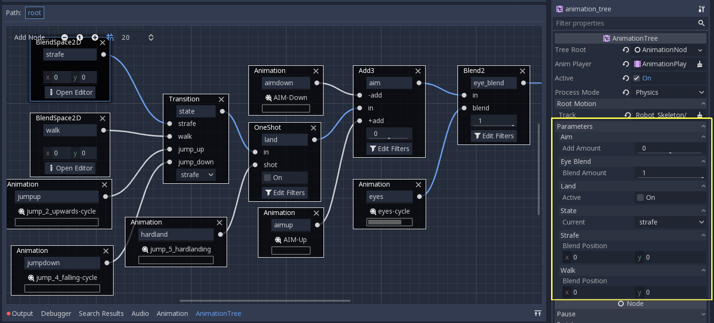
Điều này rất tiện vì nó cho phép tạo hoạt ảnh cho các tham số từ một AnimationPlayer, hoặc thậm chí từ chính AnimationTree, giúp xây dựng logic hoạt ảnh rất phức tạp.
Để chỉnh sửa các giá trị này từ code, bạn phải lấy đường dẫn thuộc tính. Bạn có thể tìm thấy chúng bằng cách di chuột lên bất kỳ tham số nào:

Sau đó bạn có thể đặt hoặc đọc chúng:
animation_tree.set("parameters/eye_blend/blend_amount", 1.0)
# Alternate syntax (same result)
animation_tree["parameters/eye_blend/blend_amount"] = 1.0
animationTree.Set("parameters/eye_blend/blend_amount", 1.0);
Ghi chú
Advance Expression từ StateMachine sẽ không xuất hiện trong phần parameters. Lý do là chúng được lưu trong một script khác chứ không phải trong chính AnimationTree. Advance Conditions thì sẽ xuất hiện trong phần parameters.